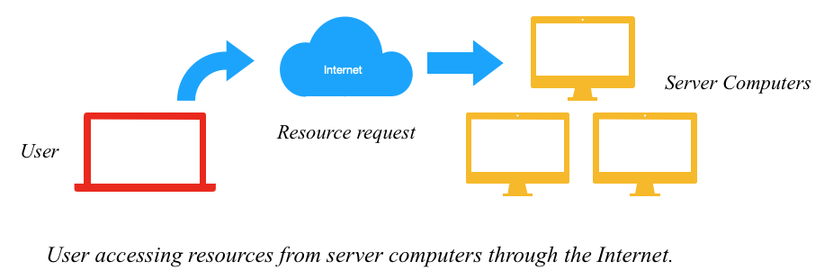
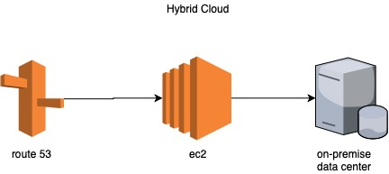
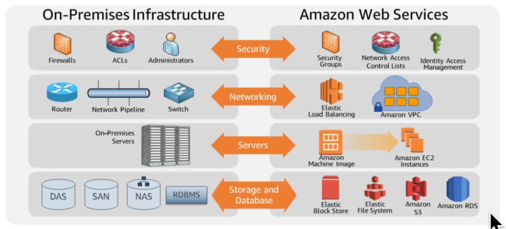
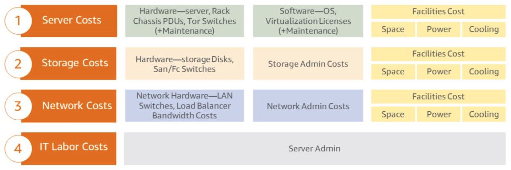
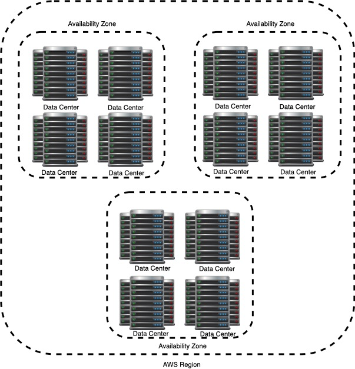

What is Cloud Computing?
–Cloud computing is the on-demand delivery of computer power, database storage, applications, and other IT resources through a cloud services platform via the internet with pay-as-you-go pricing.

- Web-services is another commonly given name to cloud computing services.
- The cloud is comprised of server computers located in large data centers in different locations around the world.
- Cloud computing provides businesses and organizations the ability to pay-as-they-go instead of having to initially invest in on-premise information technology.
- Organizations will decrement the risk by avoiding the unnecessary purchase of costly equipment. Cloud computing solve the needs of high capital investment for small businesses and/or organizations.
Before Cloud Computing
–Cloud computing enables you to stop thinking of your infrastructure as hardware, and instead think of it and use it as software.
Example: Organizations no longer have to guess the amount of resources in terms of infrastructure equipment; This would cause organizations to have unused or not enough resources because of bad guess estimations.
Unused resource → Waste → Money loss
Hardware solutions are physical and require resources such as:
- Space – Where are you storing your new equipment?
- Staff – Who will maintain and continuously maintain your equipment?
- Physical Security – Who will maintain the on-premise IT equipment safe from intruders?
- Planning – How will you implement these changes?
- Capital Expenditure – How much money do you need invest?
Guess at theoretical maximum peaks
- Is there enough resource capacity?
- Do we have sufficient storage
What if your needs change? You have to go through the time, effort, and cost required to change all these things.
–Cloud computing provides businesses and organizations the ability to select the services that match their needs in combination with elastic computing resources which provides the organization the ability to only pay for the resources being consumed; these could increment or decrease according to an organization’s operations and performance.
This approach provides flexibility and a wide range of choices to the customer.
Utilizing Cloud Computing
–Software is flexible ← AWS cloud services provides computing resources as software.
–If your needs change, your software can change much more quickly, easily, and cost-effectively than your hardware.
Example: That means that you can provision and terminate resources as necessary on AWS, instead of paying for hardware when you are not using it.
–You can treat resources as temporary and disposable resources, free from inflexibility and constraints of a fixed and finite on-premise IT infrastructure.
–With AWS you can be more agile, and efficient with change management, testing, reliability, and capacity planning.
Three Models of Cloud Computing
The three categories vary in terms of control and responsability
- SaaS – Software as a service
- Manage files
- Manage basic settings
- Limited access and control
- PaaS – Platform as a service
- Provides some sort of framework for developers to build and work on applications
- Someone else manages the hardware and operating system
- Lack of direct control to infrastructure
- Not in control of:
- Patching
- Updates
- Maintenance
- Hardware
- Operating system
- IaaS – Infrastructure as a service ← Complete control
- You manage the server physically or virtually
- Provider has no access to your server
Basic Building Block for Cloud IT Include:
- Network features
- Compute
- Data storage space
Three Cloud Deployment Models
- All-In Cloud
- Cloud-based application that is fully deployed in the cloud
- All parts of the application run in the cloud
- Cloud-based applications can be built on low-level infrastructure pieces such as:
- Networking
- Compute
- Storage
- Cloud-based applications can use higher-level services that provide abstraction from the management, architecting, and scaling requirements of core infrastructure:
- Container clusters management
- Automation
- Hybrid
- Connect infrastructure and applications between cloud-based resources and existing resources that are not in the cloud
- Cloud and existing on-premise infrastructure
- On-Premise – Infrastructure that is located within the physical confines of an enterprise.
- Data centers are often kept on-premise
- Used to extent an organization’s infrastructure into the cloud while connecting cloud resources to an internal system.
- Private Cloud (On-Premise)
- Provides dedicated resources and is a popular choice for organizations who need to meet certain compliance standards.
- Infrastructure that is fully kept on-premise
- Similar to legacy IT infrastructure
- Uses application management and virtualization to increase resource utilization
- Virtulization methods such as:
- KVM
- VMWare
- Often not accessible from outside the organization
- Organization has total and complete control over the infrastructure
Hybrid Deployment Diagram Example

All-In Cloud versus On-Premises
- All-In Cloud
- Capacity is in sync with demand
- Resources are provisioned and decommissioned in response to demand and almost instantaneously
- No upfront investment
- Low ongoing costs
- Focus on innovation and not management
- Flexible capacity (Dynamic provisioning)
- Speed and agility (Reponde to market conditions)
- Global reach on demand
- Decreases latency at a minimal cost
- Provides managed IT resources on demand
- On-Premises
- Requires forecast of demand
- Will likely result in either waster or shortfall because resources are fixed
- Slow and expensive
- Does not asjust to demand
- Large initial purchase
- Labor, patches, and upgrade cycles
- Systems administration
- Fixed capacity
- Long procurement cycle and setup
- Limited geographic regions
- Hard to deliver great performance to a distributed user base
What can you do in the cloud?
Cloud computing platforms can be for:
- Application hosting
- Host internal applications
- Host SaaS applications
- Backup and storage
- Dependable backup solutions
- Content delivery
- Distribute content worldwide with high data transfer speeds
- Websites
- Enterprise IT
- Host internal or external-facing IT applications
- Databases
- Hosted enterprise database software
- Relational databases
- Non-relation databases
Side-by-side comparison of AWS products and traditional IT infrastructure

Important Cloud Terminology
- High Availability (High Available) – Accessible when you need it
- Resource that is accessible when you attempt to access it
- Services you are trying to request work as expected
- Fault Tolerance (Fault Tolerant) – Ability to withstand a certin amount of failure and still remain functional
- Ability of a system to be self-healing and return to full capacity despite a failure
- Ability to fail and remain functional
- Scalability (Scalable) – Growth is (usually) based on demand
- Ability to grow in size, capacity, and/or scope when required
- If something cannot grow in an easy manner, then it is not scalable
- Elasticity (Elastic) – Ability to grow (scale) when required and to reduce in size when resources are no longer needed
- A system that is elastic can scale to grow as needed based on demand and contract as demand decreases
Summay- Cloud computing is the on-demand delivery of IT resources with pay-as-you-go pricing
- Three models of cloud computing:
- SaaS – Software as a service
- PaaS – Platform as a service
- IaaS – Infrastructure as a service
- Cloud deployment models:
- All-in Cloud
- Hybrid
- Private
Six Benefits of Cloud Computing
- Advantage #1: Capex to Variable Expense (Trade capital expense to variable expense)
- Avoid investing in infrastructure before knowing how much you will really need
- Pay when you use computing resources
- Pay for how much you use
- Capital expense (capex) – Funds used by a company to acquire, upgrade, and maintain physical assets such as property industrial buildings, or equipment.
- Variable expense – Expense that is easily altered or avoided by the person bearing the cost.
- Advantage #2: Economies of Scale (Benefit from massive economies of scale)
- By using cloud computing, you can achieve a lower variable cost than you can get on your own.
- Hardware solutions are physical and require:
- Space
- Staff
- Physical security
- Hardware solutions are costly to procure and house
- Purchasing power is limited to the size of their individual purchases
- Cloud providers leverage hundreds of thousands of customers to achieve economies of scale.
- Higher economies of scales translates into lower pay as-you-go prices
- Advantage #3: Capacity Planning (Eliminate guessing on your capacity needs)
- What are the potential maximum peaks in usage?
- Is there enough resource capacity at peak?
- Is the amount of storage sufficient?
- What if we buy too much? or too little?
- Buying too much → waste
- Buying too little → downtime
- Advantage #4: Increase and Agility
- IT resources are a click away
- Quick procurement of resources, almost instantaneously
- Rapid availability of new resources
- Increases agility for the organization
- Cost and time it takes to develop is significantly lower
- Companies adapt quickly to change needs
- Rapid availability of new resources
- Provision resources in minutes, not weeks
- Increase innovation
- Quick, lost cost experimentation
- Leverage pre-fabricated functionality without requiring in-house expertise
- Data warehousing
- Analytics
- Increase experimentation
- Explore new avenues of business with minimal risk and expense
- Test with different configurations
- You’re able to explore new avenues of business with minimal risk and expense, and can test with different configurations.
- Advantage #5: Spend Strategically (Stop spending money on running and maintaining data centers)
- Focus on projects that differentiate your business, not the infrastructure
- Focus on customers instead of maintaining infrastructure
- Delegate racking, stacking, and powering of servers to the cloud provider
- Advantage #6: Ease of Deployment (Go global in minutes)
- Easily deploy your applications in multiple regions around the world
- Provide lower latency and better experience
- You can be operating locally today and become available globally in minutes by leveraging Amazon CloudFront and our global network of Edge Locations.
- Edge location – Where end users access services located at AWS.
- Amazon Cloudfront – Amazon CloudFront is a fast content delivery network (CDN) service that securely delivers data, videos, applications, and APIs to customers globally with low latency.
What is Amazon Web Services (AWS)?
What are Web Services?- A web service is any piece of software that makes itself available over the Internet or private (intranet) networks.
- Uses standardized format (XML or JSON) for the request and response of an API interaction.
- It is not tied to any one operating system or programming language.
- It’s self-describing via an interface definition file and is discoverable.
What is AWS?- Secure cloud services provider with more than fifty services to help businesses scale and grow.
- Provide a broad set of infrastructure services such as:
- Compute power
- Storage options
- Networking
- Databases
- Internet of Things
- Application Services
- Security and Identity
- Management tools
- Enterprise Applications
- Analytics
- On-demand IT resource with pay-as-you-go pricing strategy.
AWS by Category: Core Services
Core services refers to a broad and deep group of core cloud infrastructure services.
- Compute
- Amazon EC2
- AWS Lambda
- Auto Scaling
- AWS Elastic Beanstalk
- Amazon Elastic Container Registry
- Amazon Elastic Container Service
- Amazon Lightsail
- AWS Batch
- Networking
- Amazon VPC
- Amazon Route 53
- AWS Direct Connect
- Elastic Load Balancing
- Storage
- Amazon S3
- Amazon EBS
- Amazon CloudFront
- Amazon Glacier
- Amazon Elastic File System
- AWS Snowball
- Storage Gateway
- AWS Snowmobile
- Database
- Amazon RDS
- Amazon DynamoDB
- Amazon Redshift
- AWS Database Migration Service
- Amazon ElastiCache
AWS by Category: Foundational Services
Foundational services refers to groups of services that offer cloud-based solutions for the analytics, enterprise, mobile, and Internet of Things (IoT) platforms.
- Analytics
- Amazon EMR
- AWS Data Pipeline
- Amazon Elasticsearch
- Amazon Kinesis
- Amazon Machine Learning
- Amazon QuickSight
- Amazon Redshift
- Amazon Athena
- Enterprise Apps
- Amazon WorkSpaces
- Amazon WorkMail
- Amazon WorkDocs
- Mobile Services
- AWS Mobile Hub
- Amazon SNS
- Amazon Cognito
- AWS Device Farm
- Amazon Mobile Analytics
- AWS Mobile SDKs
- Amazon Pinpoint
- Internet of Things
AWS by Category: Developer and Operations Services
AWS developer tools is a set of services designed to enable developers and IT operations professionals practicing DevOps to rapidly and safely deliver software via Management Tools, security and identify, and app services.
- Developer Tools
- AWS CodeCommit
- AWS CodeDeploy
- AWS CodePipeline
- AWS CodeBuild
- AWS X-Ray
- Management Tools
- Amazon CloudWatch
- AWS CloudFormation
- AWS CloudTrail
- AWS Config
- AWS OpsWorks
- AWS Service Catalog
- AWS Trusted Advisor
- AWS Organizations
- Security & Identity
- AWS Identity and Access Management
- AWS Directory Service
- Amazon Inspector
- AWS CloudHSM
- AWS Key Management Service
- AWS WAF
- AWS Certificate Manager
- AWS Shield
- App Services
- Amazon API Gateway
- Amazon AppStream
- Amazon CloudSearch
- Amazon Elastic Transcoder
- Amazon SES
- Amazon SNS
- Amazon SQS
- Amazon SWF
Core Services: The Basics
Basic AWS core services are composed of:
- Compute
- Amazon Elastic Compute Cloud (EC2)
- AWS Lambda
- AWS Elastic Beanstalk
- Networking
- Amazon Virtual Private Cloud (VPC)
- Amazon Route 53
- Domain Name Services
- Storage
- Amazon S3 (Simple Storage Service)
- Amazon Glacier
- Databases
- Amazon RDS (Relational Database Service)
- Amazon DynamoDB (Non-Relational Database)
- Management Tools
- AWS CloudWatch
- AWS CloudFormation
- Security and Identity
- AWS Identity and Access Management (IAM)
Access to AWS Services
AWS services can be accessed in three ways:
- AWS Management Console
- Access on the go with AWS Console Mobile App
- AWS Command Line Interface (AWS CLI)
- Control multiple AWS services from the CLI and automate them through scripts
- Terraform
- You can make calls to your AWS services from the CLI
- Software Development Kits (SDK)
- Simplify using AWS services in your applications with an Application Programming Interface (API)
The AWS Cloud Adoption Framework
Helps organizations understand how cloud adoption transforms the way they work, and it provides structrue to identify and address gaps in skills and processes.AWS Cloud Adoption Framework (AWS CAF) – Helps organizations develop efficient and effective plans for their cloud adoption journey. Helps you build a comprehensive approach to cloud computing across your organization,and throughout your IT lifecycle.
AWS CAF breaks down the complex process of planning a move to the cloud into manageable pieces called perspective.
Perspective – Represent essential areas of focus that span people, processes, and technology.
- Capabilities within each perspective identify which aras of your organization require attention
- Actions are organized into perspective work streams that support a successful cloud journey
AWS CAF provides guidelines for establishing, developing, and running AWS environments.
Example: You’ll receive guidance that supports each unit in your organization so that each area understands how to update skills, adapt existing processes, and introduce new processes to take maximum advantage of the services provided by cloud computing.
Six Core Perspectives
AWS CAF organizes guidance into six areas of focus, called perspectives.
- Business Perspective
- How will your architectural approaches aligh technical delivery to business imperative?
- People Perspective
- What skills are needed in order to adopt the AWS cloud platform?
- Role descriptions
- Training
- Certification
- Mentoring
- Governance Perspective
- How to update the staff skills and organizational processes necessary to ensure business governance in the cloud, and manage and measure cloud investments to evaluate business outcomes?
- Platform Perspective
- What patterns, guidance, and tools are necessary to optimize your use of technology services on AWS?
- Security Perspective
- How will you define and implement the required levels of security, governance, and risk management to achieve compliance?
- Operations Perspective
- How will you provide process, guidance, and tools for optimum operational service management of the AWS environment?
Summary- Define cloud computing and alternative implementation models
- Describe the advantage of cloud computing
- Explore AWS services
- Understand AWS CAF
Fundamentals of AWS Pricing
There are three fundamental characteristics you pay for with AWS:
There are the core characteristics that have the greatest impact on cost
- Pay for AWS fundamentals
- Compute
- Storage
- Outbound data transfer
There is NO charge for inbound data transfer or for data transfer between other AWS services within the same AWS Region, although there is a charge for aggregated outbound data tranfer.
The outbound data transfer is aggregated across:- Amazon Elastic Compute Cloud (Amazon EC2)
- Amazon Simple Storage Service (Amazon S3)
- Amazon Relational Database Service (Amazon RDS)
- Amazon SimpleDB
- Amazon Simple Queue Service (Amazon SQS)
- Amazon Simple Notification Service (Amazon SNS)
- Amazon Virtual Private Cloud (Amazon VPC)
Charged at the outbound data transfer rate. This charge appears on the monthly statement as AWS Data Transfer Out
AWS Pricing Model
At the end of the month, you pay for what you use. You can start or stop using a product at any time; No long-term contracts are required.
This utility-style pricing model include:
- Pay for what you use
- Pay only for the services you consume
- No large upfront expenses
- Services available on demand
- No long-term contracts
- Lower variable costs
- Adapt to changing business needs
- Redirect focus on innovation and invention
- No longer need to dedicate valuable resources to building costly infrastructure
- Pay less when you reserve
- Invest in reserve instances (RIs)
- Save up to 75%
- Types of reserve instances:
- All Up-front Reserved Instance (AURI) → Largest discounts
- Partial Up-front Reserved Instance (PURI) → Lower discounts
- No Upfront Payments Reserved Instance (NURI) → Smaller discounts
- Minimize risk
- Predictably manage budgets
- Comply with policies that require longer-term commitments
- Pay less when you use more
- Savings as usage increase
- Tiered pricing for services
- Amazon S3, EBS, EFS get cheaper the more you use them
- Data transfer IN is always free
- Multiple storage services deliver lower storage costs based on needs
- Choosing the right combination of storage options helps you reduce cost while preserving performance, security, and durability.
- Get the proper type of storage for the proper type of job!
- Pay even less as AWS grows
- AWS is focused on lowering cost of doing business → Provides lower costs!
- Results in AWS passing savings from economies of scale to you
- Since 2006, AWS has lowered pricing 61 times
- Future higher performing resources replace current resources for no extra charge
Custom Pricing
–Every customer has different needs.
–Custom pricing is vailable for high-volume projects with unique requirements.
AWS Free Tier
AWS Free Tiers helps customers get started in the cloud.
However, there are some limitations to the free tier benefits such as:
- Only available to new customers
- Up to one year
- Applicable to only certain services and options
Example: If you’re a new AWS customer, you can run a free Amazon EC2 T1 micro instance for a year, while also leveraging a free usage tier for Amazon S3, Amazon Elastic Block Store, Elastic Load Balancing, AWS data transfer, and other AWS services.
No Charge
AWS services for no additional charge include:
- Amazon VPC
- Lets you provision logically isolated section of the AWS Cloud where you can launch AWS resources in a virtual network that you define.
- AWS Identify and Access Management
- Controls your user’s access to AWS services and resources.
- Consolidated Billing
- Billing feature in AWS Organizations to consolidate payment for multiple AWS accounts or multiple AISPL accounts.
- Consolidated billing provides:
- One bill for multiple accounts
- The ability to track each account’s charges
- The opportunity to decrease charges as a result of volume pricing discounts from combined usage
- Consolidate all of your accounts using Consolidated Billing and get tiered benefits
- AWS Elastic Beanstalk
- Quickly deploy and manage aplications in the AWS cloud
- AWS CloudFormation
- Gives developers and systems administrators an easy way to create a collection of related AWS resources and provision them in an orderly and predictable fashion
- Automatic Scaling
- Automatically adds or removes resources according to conditions you define
- Resources you are using increase seamlessly during demand spikes to maintain performance and decrease automatically during demand lulls to minimize costs
- AWS OpsWorks
- Application management service that makes it easy to deploy and operate applications of all shapes and sizes
Notice that some charges may be associated with other AWS services used in conjunction with these services.
Total Cost of Ownership (TCO)
Businesses often want to understand the total cost of ownership, which is a financial estimate that helps buyers and owners determine the direct and indirect costs of a product or system. It reflects the purchase price of an asset plus the costs of operation. Total cost of ownership information is especially helpful when you are making the decision of whether or not to deploy on Amazon Web Services.
Total Cost of Ownership (TCO) – The financial estimate to help identify direct and indirect costs of a system.
- Includes cost of a service plus all of the costs associated with owning the service.
- Used for comparing the costs of running an entire infrastructure environment for a specific workload in an on-premises or co-location facility, to the same workload running on a cloud-based infrastructure.
- Comparison is done for budgeting purposes or to build a business case for business decisions regarding the optimal deployment solution.
Reasons to use TCO (Total Cost of Ownership)- To compare the costs of running an entire infrastructure environment or specific workload on-premises versus AWS.
- To budget and build the business case for moving to the cloud.
We can identify the best option by comparing the on-premises solution to a cloud solution.
TCO (Total Cost of Ownership) Considerations- Server Costs – Costs for both hardware and software, along and facilities costs to house the equipment.
- Storage Costs – Costs associated with the hardware, administration, and facilities.
- Network Costs – Costs associated with hardware, administration, and facilities.
- IT Labor Costs – Costs that are required to administer the entire solution.
Cloud costs are upfront and readily calculated because pricing is frequently fixed per unit of time.
In the other hand, cost of on-premise infrastructure are difficult to determine and must take into account direct and indirect costs.
- Direct costs – Costs associated with running a server like power, floor space, storage, and IT operations to manage those resources.
- Indirect costs – Costs associated with running a server like network and storage infrastructure.

AWS Simple Monthly Calculator
Use the Simple Monthly Calculator to:
- Estimate monthly costs
- Identify opportunities to reduce monthly costs
- Use templates to compare services and deployment models
- Shows a breakdown of features for each service in each region
Using this tool, you can add, modify, and remove services from your bill and it will recalculate the estimated monthly charges automatically.
AWS TCO Calculator
The AWS TCO Calculator helps you evaluate the total cost of ownership of a solution.
Use the TCO Calculator to:
- Estimate cost savings when using AWS
- Use detailed reports
- Can be used in executive presentations
- Modify asumptions that best meets your needs
- Analyze detailed reports that show a 3-year TCO comparison by cost categorie
TCO calculator explains the assumptions and the methodology behind the calculations.
Additional Benefit Considerations
Benefits associated with implementing a cloud infrastructure over an on-premise infrastructure.
Hard Benefits
- Reduced spending on compute, storage, networking, and security
- Avoidance of hardware and software purchases (CapEx) — Capital Expense
- Reductions in operational costs, backup, and disaster recovery
- Reduction in operations personnel
Soft Benefits
- Reuse of service and applications that allow you to define, and redefine solutions using the same cloud service
- Increased developer productivity
- Improved customer satisfaction
- Improved employee morale
- Agile business processes able to quickly respond to new and emerging opportunities
- Increase global reach
Cloud Total Cost of Ownership – Defines what will be spent on the technology after adoption - or what it costs to “run the engine”/ Typically, a TO analysis looks at the “as is” on-premises infrastructure and compares this with the cost of the “to be” infrastructure state in the cloud/ While this is easy to calculate, it may only provide a narrow view of the total financial impact of moving to the cloud.
Return on Investment – Analysis can be used to determine the value generated while taking spending and saving into consideration. This analysis starts by identifying the hard benefits in terms of direct and visible cost reductions and efficiency improvements.
AWS Global Infrastructure
AWS provides a broad set of services, such as compute power, storage options, networking, and databases, delivered as an on-demand utility that is available in seconds, with pay-as-you-go pricing. All of these services reside on the AWS global infrastructure.
AWS’s global infrastructure can be broken down into three elements:
- Regions
- Availability Zones
- Edge Locations
AWS Data Centers
The foundation of AWS infrastructure are the data centers.
Data center – Location where the actual physical data resides. AWS data centers are built in clusters in various global regions.
Data centers are securely designed with several factors in mind:
- Each location is carefully evaluated to mitigate environmental risk
- Data centers have a redundant design that anticipates and tolerates failure while maintaining service levels
- To ensure availability, critical system components are backed up across multiple isolated locations known as Availability Zones
- To ensure capacity, AWS continuously monitors service usage to deploy infrastructure to support availability commitments and requirements
- Data center locations are not disclosed and all access to them is retristed
- In case of failure, automated processes move customer data traffic away from the affected area
- A single data center typically houses 50,000 to 80,000 physical servers, as larger data centers are undesirable
- All data centers are online; no data center is “cold”
- AWS custom network equipment:
- AWS utilizes custom, multi-ODM sourced network equipment
- Amazon custom network protocol stack
AWS Regions
The AWS Cloud Infrastructure is built around Regions and Availability Zones
- An AWS Region is a geographical area
- Each Region is made up of two or more Availability Zones
- Achieves fault tolerance and stability
- Regions are isolated from one another
- AWS has 18 Regions worldwide
- You enable and control data replication across Regions
- When you distribute applications across multiple Availability Zones, be aware of location-dependent privacy and compliance requirements, such as the EU Data Privacy Directive.
- When selecting a Region, it is also important to consider which region will help you optimize latency while minimizing costs and adhering to whatever regulatory requirements you may have.
- Communication between Regions uses AWS backbone network connections infrastructure
- AWS products and services are available by region
AWS Availability Zone
Availability Zones consist of one or more discrete data centers
- Each Availability Zone is:
- Made up of one ore more data centers
- Designed for fault isolation, each with redundant power, networking, and connectivity housed in separate facilities
- Interconnected with other Availability Zones using high-speed private links
- Some Availability Zones have as many as six data centers
- No data center can be part of two Availability Zones
- Each Availability Zone is designed as an independent failure zone
- You choose your Availability Zone
- AWS recommends replicating across multiple Availability Zones for resiliency

AWS Edge Locations
An Edge Location is where end users access AWS services
- An Edge Location is where users access AWS services
- It is a global network of 114 points presense in 56 cities across 24 countries
- 103 Edge Locations and 11 regional Edge Caches
- Specifically used with Amazon CloudFront, a Global Content Delivery Network (CDN), to deliver content to end users with reduced latency
- Regional Edge Caches, used by default with Amazon CloudFront, are utilized when you have content that is not accessed frequently enough to remain in an Edge Location.
- Regional Edge Caches absorb this content and provide an alternative to that content having to be fetched from the origin server.
- CloudFront is a Content Delivery Network (or CDN) used to distribute content to end users to reduce latency. Amazon Route 53 is a DNS service.
- Requests going to either one of these services will be routed to the nearest Edge Location automatically.
AWS Infrastructure Features
This infrastructure has several valuable feature
- Elastic and Scalable
- Elastic infrastructure; dynamic adaption of capacity
- Scalable infrastructure; adapts to accomodate growth
- Fault-tolerant
- Continues operating properly in the presence of a failure
- Built-in redundancy of components
- High availability
- High level of operational performance
AWS Service and Service Category Overview
AWS offers a broad set of global cloud-based services that can be used as building blocks for common cloud architectures.
- Compute
- Storage
- Database
- Networking & Content Delivery
- Identity Access and Management